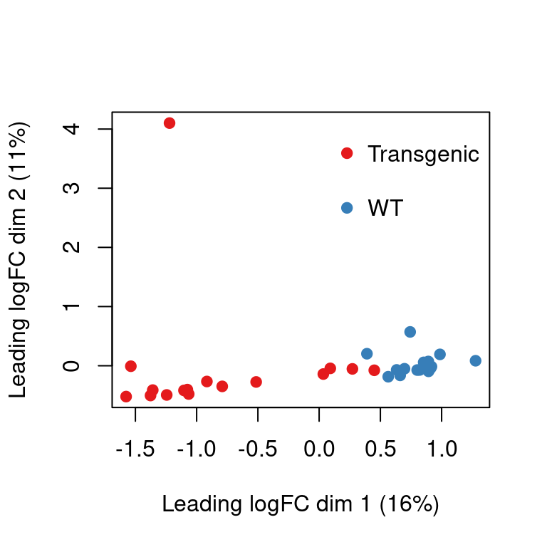

suppressPackageStartupMessages({
library("arrow")
library("dplyr")
library("duckdb")
library("edgeR")
library("glue")
library("rnaseqExamples")
library("tibble")
library("tidyr")
library("DelayedArray")
library("DESeq2")
library("Mus.musculus")
})tl;dr
Previously, I learned how to export gene expression data from Bioconductor/R objects as parquet files. Today, I am exploring Hervé Pagès’s awesome DelayedArray Bioconductor package to represent data stored in parquet files as R matrices - retrieving only those subsets needed for downstream analysis.
Exporting gene expression data to parquet files
To get some example RNA-seq data, I am loading two SummarizedExperiments (tau and sarm1)with bulk RNA-seq data from my rnaseqExamples R package.
First, I extract the raw counts into data.frames with a short tidy() helper function. Afterward, I store this data in parquet files in a temporary directory.
Note
Note that I am not including sample annotations in the parquet files, as I found it useful to keep this (relatively small) set of metadata in a separate object, file or (e.g. SQLite) database.
# Coerce a DGEList or a SummarizedExperiment into a tibble
tidy <- function(x) {
# extract raw counts
edgeR::calcNormFactors(x)$counts %>%
as.data.frame() %>%
tibble::rownames_to_column("feature_id") %>%
tidyr::pivot_longer(cols = colnames(x), names_to = "sample_id",
values_to = "count")
}
# Store gene expression data for two mouse RNA-seq studies as parquet files"
out_dir <- file.path(tempdir(), "parquet")
dir.create(out_dir, showWarnings = FALSE)
for (dataset in c("tau", "sarm1")) {
df <- tidy(get(dataset))
df$study <- dataset # add a columns with the name of the experiment
arrow::write_parquet(
x = df,
sink = file.path(out_dir, paste0(dataset, ".parquet"))
)
}
dir(out_dir)[1] "sarm1.parquet" "tau.parquet" Creating the ParquetArraySeed S4 class
Now, with the two parquet files in place, I am ready to follow Hervé’s excellent instructions to define my very own ParquetArraySeed S4 class, which can then be passed into the DelayedArray() constructor function (see below).
To keep things simple, my ParquetArraySeed class will only store a single attribute: the path to the directory containing the parquet files.
setClass("ParquetArraySeed",
contains = "Array",
slots = c(
filepath = "character"
)
)To simplify the instantiation of new objects, I also define a constructor function, which also ensures that the absolute file path is stored.
#' @importFrom tools file_path_as_absolute
ParquetArraySeed <- function(filepath) {
filepath <- tools::file_path_as_absolute(filepath)
new("ParquetArraySeed", filepath = filepath)
}Essential methods
To power a DelayedArray object, I need to define at least three different S4 methods for my new class:
dim()- returning an integer vector with the dimensionsdimnames()- returning a list of character vectors with the dimension names (if any), e.g. the row and column names of a matrix.extract_array()- returning an ordinary array for a set of indices (see below), e.g. a subset of the dataset to realize in memory.
dim and dimnames methods
To query the set of parquet files, I am using duckdb to retrieve the unique sample and feature identifiers. In case this information is useful later, I am caching the return values with memoise. That’s handy because I can simply return the lengths of the dimensions names via the dim() method - without accessing the same files again.
.unique_values <- function(x, column, con = NULL, suffix = ".parquet") {
if (is.null(con)) {
con <- duckdb::dbConnect(duckdb::duckdb())
on.exit(duckdb::dbDisconnect(con, shutdown=TRUE))
}
data_dir <- file.path(x@filepath, paste0("*", suffix))
dbGetQuery(
con = con,
glue_sql(
"SELECT DISTINCT {`column`}
FROM read_parquet({data_dir})
ORDER BY {`column`}",
.con = con)
)[, 1]
}
unique_values <- memoise::memoise(.unique_values)
setMethod("dimnames", "ParquetArraySeed", function(x) {
samples <- unique_values(x, column = "sample_id")
features <- unique_values(x, column = "feature_id")
list(features, samples)
})
setMethod("dim", "ParquetArraySeed", function(x) {
lengths(dimnames(x))
})The extract_array method
I also use duckdb() to retrieve the actual data for a subset of features, a subset of samples - or both. In case users only specify one or the other, e.g. by passing an index with NULL values, I explicitely define four different SQL queries returning:
- The full dataset (when
index = list(NULL, NULL)), - All features for a subset of samples,
- Selected features for all samples, or
- Selected features for selected samples.
Finally, I pivot the data into a feature x sample matrix.
.get_data <- function(x, index, con = NULL, suffix = ".parquet") {
if (is.null(con)) {
con <- duckdb::dbConnect(duckdb::duckdb())
on.exit(duckdb::dbDisconnect(con, shutdown=TRUE))
}
data_dir <- file.path(x@filepath, paste0("*", suffix))
# match indices to feature and sample identifiers
dims <- dimnames(x)
keep_features <- dims[[1]][index[[1]]]
# no indices => return the full dataset
if (is.null(index[[1]]) & is.null(index[[2]])) {
dataset <- dbGetQuery(
con = con,
glue_sql(
"SELECT feature_id, sample_id, count
FROM read_parquet({data_dir})",
.con = con)
)
keep_features <- unique(dataset$feature_id)
keep_samples <- unique(dataset$sample_id)
# no sample index => return all samples
} else if (!is.null(index[[1]]) && is.null(index[[2]])) {
keep_features <- dims[[1]][index[[1]]]
dataset <- dbGetQuery(
con = con,
glue_sql(
"SELECT feature_id, sample_id, count
FROM read_parquet({data_dir})
WHERE feature_id IN ({keep_features*})",
.con = con)
)
keep_samples <- unique(dataset$sample_id)
# no feature index => return all features
} else if (is.null(index[[1]]) && !is.null(index[[2]])) {
keep_samples <- dims[[2]][index[[2]]]
dataset <- dbGetQuery(
con = con,
glue_sql(
"SELECT feature_id, sample_id, count
FROM read_parquet({data_dir})
WHERE sample_id IN ({keep_samples*})",
.con = con)
)
keep_features <- unique(dataset$feature_id)
} else {
keep_features <- dims[[1]][index[[1]]]
keep_samples <- dims[[2]][index[[2]]]
dataset <- dbGetQuery(
con = con,
glue_sql(
"SELECT feature_id, sample_id, count
FROM read_parquet({data_dir})
WHERE feature_id IN ({keep_features*})AND sample_id IN ({keep_samples*})
ORDER BY sample_id, feature_id",
.con = con)
)
}
# pivot the count data into a regular matrix
m <- matrix(
data = NA_integer_,
nrow = length(keep_features),
ncol = length(keep_samples),
dimnames = list(keep_features, keep_samples))
matrix_index <- cbind(
match(dataset$feature_id, row.names(m)),
match(dataset$sample_id, colnames(m))
)
m[matrix_index] <- dataset$count
return(m)
}
.extract_array_from_ParquetArraySeed <- function(x, index) {
.get_data(x = x, index = index)
}
setMethod("extract_array", "ParquetArraySeed",
.extract_array_from_ParquetArraySeed)Creating a first ParquetArraySeed object
With these three methods in place, I can instantiate my first ParquetArraySeed object, which is suitable as input to the DelayedArray constructor from the eponymous R package:
seed <- ParquetArraySeed(out_dir)
da <- DelayedArray(seed)
da<53801 x 48> DelayedMatrix object of type "integer":
DRN-10415 DRN-10418 DRN-10421 ... DRN-16866 DRN-16867
ENSMUSG00000000001 2754 2764 2907 . 1214 1002
ENSMUSG00000000003 0 0 0 . 0 0
ENSMUSG00000000028 54 61 66 . 39 57
ENSMUSG00000000031 0 0 3 . 16 17
ENSMUSG00000000037 9 50 26 . 58 78
... . . . . . .
ENSMUSG00000116519 0 0 0 . 0 0
ENSMUSG00000116520 0 0 0 . 0 0
ENSMUSG00000116521 0 0 0 . 0 0
ENSMUSG00000116525 3 1 2 . 65 44
ENSMUSG00000116528 0 0 0 . 0 0
DRN-16868
ENSMUSG00000000001 921
ENSMUSG00000000003 0
ENSMUSG00000000028 38
ENSMUSG00000000031 22
ENSMUSG00000000037 33
... .
ENSMUSG00000116519 0
ENSMUSG00000116520 0
ENSMUSG00000116521 0
ENSMUSG00000116525 45
ENSMUSG00000116528 0When the object is printed, we are presented with the first couple of rows and columns, but most of the data remains on disk (e.g. has not been retrieved from the parquet files).
Subsetting the DelayedArray works as expected, e.g. to retain only samples from the tau study:
# subset to one dataset - using gene and sample identifiers
da[row.names(tau), colnames(tau)]<53801 x 32> DelayedMatrix object of type "integer":
DRN-10415 DRN-10418 DRN-10421 ... DRN-10502 DRN-10505
ENSMUSG00000000001 2754 2764 2907 . 2260 3273
ENSMUSG00000000003 0 0 0 . 0 0
ENSMUSG00000000028 54 61 66 . 16 82
ENSMUSG00000000031 0 0 3 . 0 0
ENSMUSG00000000037 9 50 26 . 11 11
... . . . . . .
ENSMUSG00000116519 0 0 0 . 0 0
ENSMUSG00000116520 0 0 0 . 0 0
ENSMUSG00000116521 0 0 0 . 0 0
ENSMUSG00000116525 3 1 2 . 1 3
ENSMUSG00000116528 0 0 0 . 0 0
DRN-10508
ENSMUSG00000000001 2758
ENSMUSG00000000003 0
ENSMUSG00000000028 47
ENSMUSG00000000031 0
ENSMUSG00000000037 6
... .
ENSMUSG00000116519 0
ENSMUSG00000116520 0
ENSMUSG00000116521 0
ENSMUSG00000116525 1
ENSMUSG00000116528 0Creating a parquet-backed SummarizedExperiment
For downstream analyses, it is useful to combine sample- and feature-annotations with the gene expression counts in a single SummarizedExperiment.
Let’s extract the sample metadata from the original data objects and add a study column.
pdata <- lapply(c("tau", "sarm1"), \(x) {
col_data <- colData(get(x))
col_data$study <- x
return(col_data)
})
pdata <- Reduce(rbind, pdata)The original datasets only provide ensembl gene identifiers, so let’s retrieve the corresponding gene symbols and entrez identifiers from the Mus.musculus Bioconductor annotation package.
# add Entrez identifiers and gene symbols for both human and mouse genes
fdata <- DataFrame(
ensembl = row.names(da),
entrez = mapIds(Mus.musculus,
row.names(da),
column = "ENTREZID",
keytype = "ENSEMBL",
multiVals = "first"),
symbol = mapIds(Mus.musculus,
row.names(da),
column = "SYMBOL",
keytype = "ENSEMBL",
multiVals = "first"),
row.names = row.names(da)
)Now we are ready to compose meta- and gene expression data into a single object:
se <- SummarizedExperiment(
assays = list(counts = da),
rowData = fdata[row.names(da), ],
colData = pdata[colnames(da),,drop=FALSE ]
)
seclass: SummarizedExperiment
dim: 53801 48
metadata(0):
assays(1): counts
rownames(53801): ENSMUSG00000000001 ENSMUSG00000000003 ...
ENSMUSG00000116525 ENSMUSG00000116528
rowData names(3): ensembl entrez symbol
colnames(48): DRN-10415 DRN-10418 ... DRN-16867 DRN-16868
colData names(2): group studytable(se$study)
sarm1 tau
16 32 At this point, we still haven’t retrieved the actual counts from the parquet files, e.g. they information is still on disk. It will automatically be retrieved when downstream functions coerce the DelayedArray into a regular matrix. For example, edgeR’s calcNormFactors function accepts a SummarizedExperiment and returns a DGEList, ready for exploratory analysis e.g. multi-dimensional scaling.
y <- edgeR::calcNormFactors(se[, se$study == "tau"])
y$samples$genotype <- factor(
ifelse(grepl("WT_", y$samples$group), "WT", "Transgenic")
)
colors <- palette.colors(n = nlevels(y$samples$genotype),
palette = "Set1")[as.integer(y$samples$genotype)]
limma::plotMDS(y, col = colors, pch = 19)
legend("topright", legend = levels(y$samples$genotype), bty = "n", pch = 19,
col = palette.colors(n = nlevels(y$samples$genotype), palette = "Set1"),
y.intersp=2)
Summary
Because the DelayedArray package is so thoughtfully designed, it was surprisingly straightforward to represent data stored in parquet files as a matrix. This way, I can leverage familiar Bioconductor tools and take advantage of the language-agnostic file format.
A few directions and caveats that I haven’t explored, yet:
- In this example, I am generating one parquet file for each of the studies, e.g. I am manually partitioning the data by
study. When I want to retrieve all data for one of the studies, I could simply parse only the corresponding parquet file, instead of querying & filtering all files in the directory (as a Dataset ). - My parquet files are stored on the local system. Accessing them in a cloud storage location (e.g. on AWS S3) is supported by
duckdbas well, but network speed will likely become limiting. I will explore the use ofAWS Athena, a cloud-based SQL database, in a future post, as shown e.g. in this AWS blog post. - The parquet files I generated here are relatively small, e.g. ~ 5 Mb, reflecting the relatively small size of the example bulk RNA-seq datasets. The arrow project recommends avoiding accessing many files smaller than 20MB, but that’s likely not a problem until I need to handle thousands of studies.
- Disk-backed arrays are great if computations can be performed on small chunks of data, e.g. to visualize a subset of feature and / or samples. When it is necessary to realize the full dataset in memory, the
DelayedArrayreturns a conventional matrix - e.g. sparse representations don’t seem to be supported right now (as far as I can tell). - Finally, I have only implemented three essential methods, but have not touched on any optimized backend-specific methods. For example, we could issue a SQL query to calculate
maxorcolSumsvalues instead of loading the full data matrix into our R session. (This might be especially interesting if the database engine is running on a remote server.)
Lots more to learn - and a big thank you to Hervé Pagès and the entire Bioconductor team!
Reproducibility
Session Information
sessioninfo::session_info("attached")─ Session info ───────────────────────────────────────────────────────────────
setting value
version R version 4.3.1 (2023-06-16)
os Debian GNU/Linux 12 (bookworm)
system x86_64, linux-gnu
ui X11
language (EN)
collate en_US.UTF-8
ctype en_US.UTF-8
tz America/Los_Angeles
date 2023-09-05
pandoc 3.1.1 @ /usr/lib/rstudio/resources/app/bin/quarto/bin/tools/ (via rmarkdown)
─ Packages ───────────────────────────────────────────────────────────────────
! package * version date (UTC) lib source
P abind * 1.4-5 2016-07-21 [?] CRAN (R 4.3.1)
P AnnotationDbi * 1.62.2 2023-07-02 [?] Bioconductor
P arrow * 13.0.0 2023-08-30 [?] CRAN (R 4.3.1)
P Biobase * 2.60.0 2023-04-25 [?] Bioconductor
P BiocGenerics * 0.46.0 2023-04-25 [?] Bioconductor
P DBI * 1.1.3 2022-06-18 [?] CRAN (R 4.3.1)
P DelayedArray * 0.26.7 2023-07-28 [?] Bioconductor
P DESeq2 * 1.40.2 2023-06-23 [?] Bioconductor
P dplyr * 1.1.2 2023-04-20 [?] CRAN (R 4.3.1)
P duckdb * 0.8.1-2 2023-08-25 [?] CRAN (R 4.3.1)
P edgeR * 3.42.4 2023-05-31 [?] Bioconductor
P GenomeInfoDb * 1.36.1 2023-06-21 [?] Bioconductor
P GenomicFeatures * 1.52.2 2023-08-25 [?] Bioconductor
P GenomicRanges * 1.52.0 2023-04-25 [?] Bioconductor
P glue * 1.6.2 2022-02-24 [?] CRAN (R 4.3.1)
P GO.db * 3.17.0 2023-09-04 [?] Bioconductor
P IRanges * 2.34.1 2023-06-22 [?] Bioconductor
P limma * 3.56.2 2023-06-04 [?] Bioconductor
P Matrix * 1.5-4.1 2023-05-18 [?] CRAN (R 4.3.1)
P MatrixGenerics * 1.12.3 2023-07-30 [?] Bioconductor
P matrixStats * 1.0.0 2023-06-02 [?] CRAN (R 4.3.1)
P Mus.musculus * 1.3.1 2023-09-04 [?] Bioconductor
P org.Mm.eg.db * 3.17.0 2023-09-04 [?] Bioconductor
P OrganismDbi * 1.42.0 2023-04-25 [?] Bioconductor
P rnaseqExamples * 0.0.0.9000 2023-09-04 [?] Github (tomsing1/rnaseq-Examples@ac35304)
P S4Arrays * 1.0.5 2023-07-24 [?] Bioconductor
P S4Vectors * 0.38.1 2023-05-02 [?] Bioconductor
P SummarizedExperiment * 1.30.2 2023-06-06 [?] Bioconductor
P tibble * 3.2.1 2023-03-20 [?] CRAN (R 4.3.1)
P tidyr * 1.3.0 2023-01-24 [?] CRAN (R 4.3.1)
P TxDb.Mmusculus.UCSC.mm10.knownGene * 3.10.0 2023-09-04 [?] Bioconductor
[1] /home/sandmann/repositories/blog/renv/library/R-4.3/x86_64-pc-linux-gnu
[2] /home/sandmann/.cache/R/renv/sandbox/R-4.3/x86_64-pc-linux-gnu/9a444a72
P ── Loaded and on-disk path mismatch.
──────────────────────────────────────────────────────────────────────────────
This work is licensed under a Creative Commons Attribution 4.0 International License.